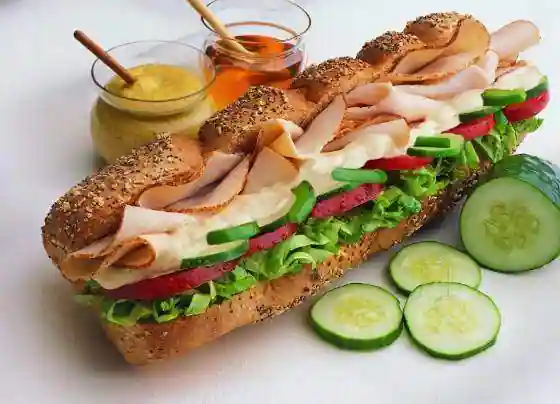

For ordering food plz click on the photo.
Subway is an American multi-national fast food restaurant franchise that primarily sells submarine sandwiches (subs), wraps, salads and beverages.
Subway was founded by 17 year old Fred DeLuca and financed by Peter Buck in 1965 as Pete's Super Submarines[7] in Bridgeport, Connecticut. The restaurant was renamed Subway two years later, and a franchise operation began in 1974 with a second restaurant in Wallingford, Connecticut.[8] It has since expanded to become a global franchise.
Subway serves an array of topping choices, allowing the customer to choose which toppings they want on their sandwich. The longtime Subway slogan, "Eat Fresh", is intended to indicate the fresh ingredients that are used in their sandwiches.
It was the fastest-growing franchise in the world in 2015[9] and, as of June 2021, had 37,540 locations in more than 100 countries and territories. More than half its locations (21,796 or 58.1%) are in the United States.[2][10][11] It also is the largest single-brand restaurant chain, and the largest restaurant operator, in the world.[12][13][14][15] Its international headquarters are in Milford, Connecticut.